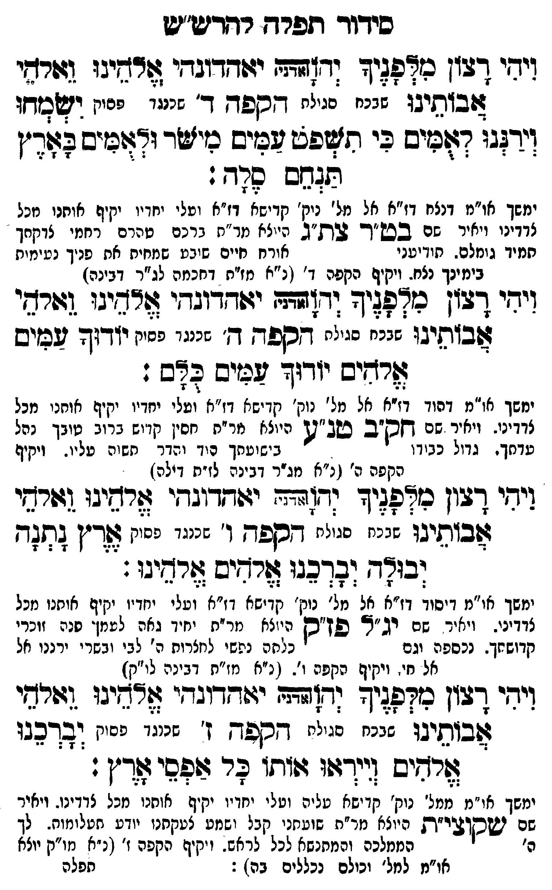

Neue Klartextfassung
ויהי רצון מלפניך יהוה (אדני) יאהדונהי אלהינו ואלהי אבותינו שבכח סגולת הקפה ד' שכנגד פסוק ישמחו וירננו לאמים כי תשפט עמים מישר ולאמים בארץ תנחם סלה: [ימשך או"מ דנצח דז"א אל מל' נוק' קדישא דז"א ועלי יחדיו יקיף אותנו מכל צדדינו ויאיר שם בט"ר צת"ג העולה מר"ת ברכם טהרם רחמי צדקתך תמיד גומלם. תודיעני אורח חיים שובע שמחות את פניך נעימות בימינך נצח. ויקיף הקפה ד' (נ"א מז"א דחכמה לג"ר דבינה)] ויהי רצון מלפניך יהוה (אדני) יאהדונהי אלהינו ואלהי אבותינו שבכח סגולת הקפה ה' שכנגד פסוק יודוך עמים אלהים יודוך עמים כלם: [ימשך או"מ דהוד דז"א אל מל' נוק' קדישא דז"א ועלי יחדיו יקיף אותנו מכל צדדינו. ויאיר שם חק"ב טנ"ע העולה מר"ת חסין קדוש ברוב טובך נהל עדתך. גדול כבודו בישועתך הוד והדר תשוה עליו. ויקיף הקפה ה' (נ"א מג"ר דבינה לז"א דילה)] ויהי רצון מלפניך יהוה (אדני) יאהדונהי אלהינו ואלהי אבותינו שבכח סגולת הקפה ו' שכנגד פסוק ארץ נתנה יבולה יברכנו אלהים אלהינו: [ימשך או"מ דיסוד דז"א אל מל' נוק' קדישא דז"א ועלי יחדיו יקיף אותנו מכל צדדינו. ויאיר שם יג"ל פז"ק העולה מר"ת יחיד גאה לעמך פנה זוכרי קדושתך. נכספה וגם כלתה נפשי לחצרות ה' לבי ובשרי ירננו אל אל חי. ויקיף הקפה ו'. (נ"א מז"א דבינה לו"ק)] ויהי רצון מלפניך יהוה (אדני) יאהדונהי אלהינו ואלהי אבותינו שבכח סגולת הקפה ז' שכנגד פסוק יברכנו אלהים וייראו אותו כל אפסי ארץ: [ימשך או"מ ממל' נוק' קדישא עליה ועלי יחדיו יקיף אותנו מכל צדדינו. ויאיר שם שקוצי"ת העולה מר"ת שועתנו קבל ושמע צעקתנו יודע תעלומות. לך ה' הממלכה והמתנשא לכל לראש. ויקיף הקפה ז' (נ"א מו"ק יוצא או"מ למל' וכולם נכללים בה):]
Original gegen neue OCR · Niqqud für Vergleich ausgeblendet
Original
ויהי רצון מלפניך יהוה (אדני) יאהדונהי אלהינו ואלהי אבותינו שבכח סגולת הקפה ד'K105-001 שכנגד פסוק ישמחו וירננו לאמים כי תשפט עמים מישר ולאמים בארץ תנחם סלה: [ימשךK105-002 או"מ דנצח דז"א אל מל' נוק'K105-003 קדישא דז"א ועליK105-004 יחדיו יקיף אותנוK105-005 מכל צדדינוK105-006 ויאיר שם בט"ר צת"ג העולה מר"ת ברכםK105-007 טהרם רחמי צדקתך תמיד גומלם.K105-008 תודיעני אורח חיים שובע שמחות אתK105-009 פניך נעימות בימינךK105-010 נצח. ויקיףK105-011 הקפה ד' (נ"א מז"אK105-012 דחכמה לג"ר דבינה)] ויהי רצון מלפניך יהוה (אדני) יאהדונהי אלהינו ואלהי אבותינו שבכח סגולת הקפה ה' שכנגד פסוק יודוך עמים אלהים יודוך עמים כלם: [ימשךK105-013 או"מ דהוד דז"א אל מל' נוק' קדישא דז"אK105-014 ועלי יחדיו יקיף אותנוK105-015 מכל צדדינו.K105-016 ויאיר שם חק"ב טנ"ע העולהK105-017 מר"ת חסין קדוש ברוב טובך נהל עדתך.K105-018 גדול כבודוK105-019 בישועתך הודK105-020 והדר תשוהK105-021 עליו. ויקיף הקפה ה' (נ"אK105-022 מג"ר דבינה לז"א דילה)] ויהי רצון מלפניך יהוה (אדני) יאהדונהי אלהינו ואלהי אבותינוK105-023 שבכח סגולת הקפה ו'K105-024 שכנגד פסוק ארץ נתנה יבולה יברכנו אלהים אלהינו: [ימשךK105-025 או"מ דיסוד דז"א אל מל' נוק' קדישא דז"א ועלי יחדיוK105-026 יקיף אותנו מכל צדדינו.K105-027 ויאיר שם יג"ל פז"ק העולה מר"ת יחידK105-028 גאה לעמךK105-029 פנה זוכרי קדושתך.K105-030 נכספה וגם כלתה נפשי לחצרותK105-031 ה' לבי ובשריK105-032 ירננו אל אל חי. ויקיף הקפה ו'. (נ"א מז"א דבינה לו"ק)] ויהי רצון מלפניך יהוה (אדני) יאהדונהי אלהינו ואלהי אבותינו שבכח סגולת הקפה ז' שכנגדK105-033 פסוק יברכנו אלהים וייראו אותו כל אפסי ארץ: [ימשךK105-034 או"מ ממל' נוק' קדישא עליה ועליK105-035 יחדיו יקיף אותנוK105-036 מכל צדדינו.K105-037 ויאיר שם שקוצי"ת העולה מר"ת שועתנוK105-038 קבל ושמע צעקתנוK105-039 יודע תעלומות.K105-040 לך ה' הממלכה והמתנשאK105-041 לכל לראש. ויקיף הקפה ז' (נ"אK105-042 מו"ק יוצא או"מ למל' וכולם נכללים בה):]K105-043
OCR · fehlbar
סידוד תפרד רדדיגויט וישי דלון כידפ(יך (ד]יףדו יזודדוגדי צזרחי:ו (זזרדי תבזתיבו שגנח הנילי לספד 'K105-001 שכנגד פפוק ושבזדו וזדזנ) דזיס בי חישפש גנוב ניישי ודצוכיב פצדין זגגב שחד . ימשךK105-002 או"מ דנצח דז"א אל מל ' ניק'K105-003 קדישא דז"א וטליK105-004 יחדיו יקיף אוחנוK105-005 מכל צדדיניK105-006 ויאיר שם בש"ך 2ת"ג הייצא מר"ח גרנרK105-007 טהרם רחמי צוקחך חמיד גומל .K105-008 תודיעני אורח חיים שיבט שמחיח אחK105-009 פניך נטימית בימנךK105-010 נצח. יקיףK105-011 הקפה ד' (נ"א מז"חK105-012 דחכמה לג"ר ובינר) ויחי פון כיץלציד וד(זהד יזודדוגדי אדדיגו (גורשי זבותיגו גנני ניי:יי ספד. ד' שנננ' אחיי יזד(ך עפזיס צלרחיש יודוד עים לאם : ימשךK105-013 או"מ דהוד דז"א אל מל' נוק' קדישא ז"אK105-014 ועלי יחדיו יקיף אוחניK105-015 מכל צדדינו-K105-016 ויאיר שם חס"ב טב"נ] היוצאK105-017 מר"ת חסין קדוש ברוב טובך נהל עדחך .K105-018 גדול כב. דו לK105-019 בישועתך יךK105-020 והדר חשוהK105-021 עליו. ויקיף הקפה ה' ( נ"אK105-022 מג"ר דבינה לז"ח דילה1 וימי דגון כזץפגיד נח(גדד יגוחדוגרי לרחיבו גזזרשי שבזתיגוK105-023 שבכח סגולת קפד ד'K105-024 שכנגד פסוק ל[ךין 243 (בזדד ועדכגו זרדים 6רשינו: ימשךK105-025 או"מ דיסוד דז"א אל מל' נוק' קדישא דז"א ועלי יחדוK105-026 יקיף אותנו כל צדדיני.K105-027 ויאיר שם רב"א פז"ס היזצא מר"ח יחיךK105-028 גאה לעמן.K105-029 פנה זוכרי קדושחך.K105-030 נכספה וגם כלחה נלשי לנזצרותK105-031 ה' לבי ובשר יK105-032 ירננו אל אל חי. ויקיף הקפע ו". ( נ"א מז"ח דבינת לו"ק] ידי דשון כיקפ:יץ (ד(דשח יזזדדיגד' צצרציגו (זרףי ל(בזתינו שננח שנייי דספלך ' שננגדK105-033 פסוק ובדכבו שרדיס [ויךגוו שזתו פר בזפסי צ[ר"ן: ימשךK105-034 או"מ ממל' נוק' קדישא טליה וטליK105-035 יחדיו יקיש אוחנוK105-036 מכל צדךינו.K105-037 ויאיר שם ישסובי"ת היוצא מר"ה שוטחניK105-038 קבל ישמע. צטקחנוK105-039 יודע זטלומוח.K105-040 לך ה' המחזלכה (המחנשאK105-041 לכל לראש. ויקיף הקפה ז' (נ"יאK105-042 מו"ק יוצא או"מ למל' וכולם נכללים בה.) : חפלהK105-043